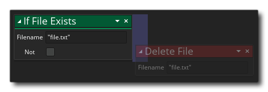

Si le fichier existe Si le fichier existe
Si le fichier existe Si le fichier existe Avec cette action, vous pouvez vérifier si un fichier avec le nom donné existe. Vous sélectionnez le fichier à vérifier (comme une piqûre et y compris l'extension) et la fonction sera retrun true si cela existe, et false si ça ne fait pas. Notez que cela retournera true si le fichier existe dans le jeu en tant que fichier inclus ou si le fichier a été sauvegardé pendant l'exécution du jeu (pour plus d'informations, reportez-vous à la section sur le système de fichiers ).
Notez que pour ajouter des actions dans le bloc "if", elles doivent être placées sur le côté de l'action, comme indiqué dans l'image ci-dessous: 

Argument La description Type Le type de données à lire, soit string (entre guillemets ""), ou un real number

Le code de bloc d'action ci-dessus crée une variable pour contenir les données du tampon, puis vérifie si un fichier de sauvegarde du tampon a déjà été créé. Si le fichier existe, il est chargé dans la variable de tampon que nous avons créée, mais si elle n'existe pas, elle est créée, écrite et sauvegardée, prête à être chargée la prochaine fois.